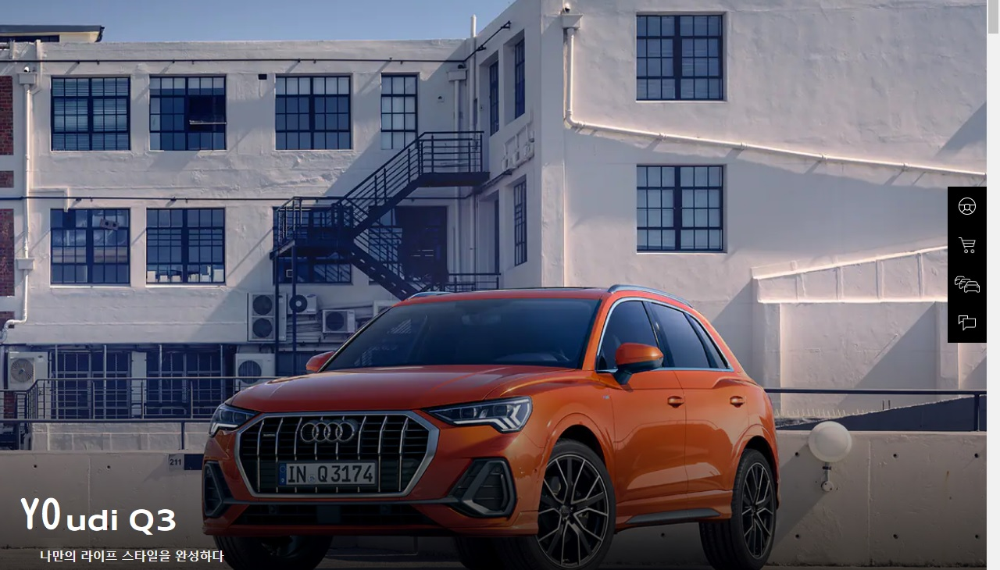
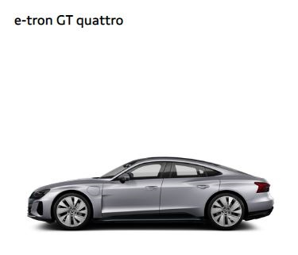
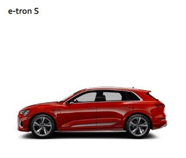
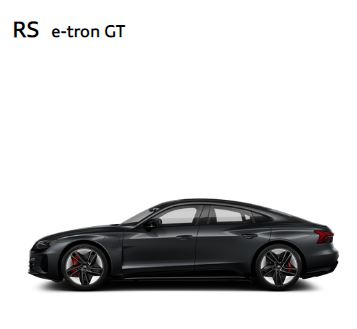
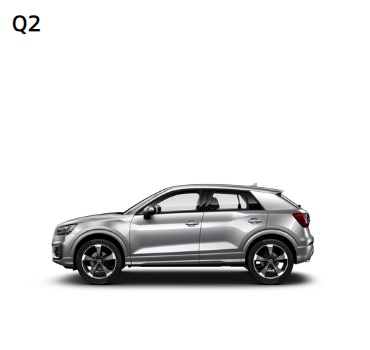
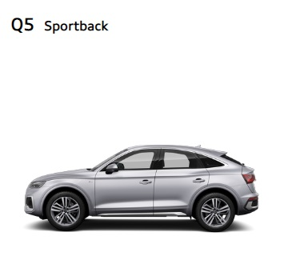
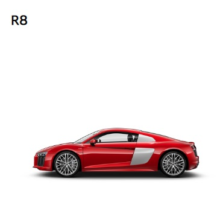

완전한 스포티함과 진화된 럭셔리함
Audi e-tron GT quattro
복합기준연비 3.4 km/kWh (도심연비 3.3 km/kWh, 고속도로연비 3.4 km/kWh); CO₂ 배출량(g/km)¹: 0. 전력소비량 및 CO₂ 배출량은 장착된 장비에 따라 달라질 수 있습니다.

전기차가 보여주는 퍼포먼스의 혁신
Audi e-tron S
복합기준연비 3.4 km/kWh (도심연비 3.3 km/kWh, 고속도로연비 3.4 km/kWh); CO₂ 배출량(g/km)¹: 0. 전력소비량 및 CO₂ 배출량은 장착된 장비에 따라 달라질 수 있습니다.

순수함의 끝, 진화된 퍼포먼스
Audi RS e-tron GT
복합기준연비 3.4 km/kWh (도심연비 3.3 km/kWh, 고속도로연비 3.4 km/kWh); CO₂ 배출량(g/km)¹: 0. 전력소비량 및 CO₂ 배출량은 장착된 장비에 따라 달라질 수 있습니다.

정의 할 수 없는 유니크함
The new Audi Q2
복합기준연비 3.4 km/kWh (도심연비 3.3 km/kWh, 고속도로연비 3.4 km/kWh); CO₂ 배출량(g/km)¹: 0. 전력소비량 및 CO₂ 배출량은 장착된 장비에 따라 달라질 수 있습니다.
새로운 곳을 향하는 모험에도, 도심에서의 일상적인 주행에서도, 아우디 Q2는 다재다능한 역량을 발휘합니다. 눈길을 사로잡는 젊고 세련된 감각의 스타일과 진보적인 디자인, 운전의 즐거움과 다양한 기능까지. 아우디 Q2는 컴팩트 SUV에 기대하는 모든것을 갖추었습니다.

스포티한 디자인. 파워풀한 성능.
The new Audi SQ5 Sportback.
복합 연비: 8.9 km/L
CO₂ 배출량: 195 g/km
아우디 SQ5 스포트백은 쿠페와 같은 실루엣의 스포티한 라인과 다용도의 충분한 공간을 갖추고 있습니다. 진보적인 디자인, 강력한 V6 TFSI 엔진 및 콰트로 4륜 구동은 도로에서 강렬한 존재감을 드러냅니다.

Performance is an attitude
The new Audi R8 V10 performance
강력한 존재감의 싱글 프레임, 미드 엔진의 탑재를 암시하듯 날카롭게 다듬은 측면 라인, 후방에 높게 장착된 디퓨저.
아우디 R8 V10 퍼포먼스는 모든 면에서 인상적입니다.